HERO_WALK_SPEEDDefault: 0.65Step: 0.01Walking / running speed on the ground.
The legend of the lost kingdom
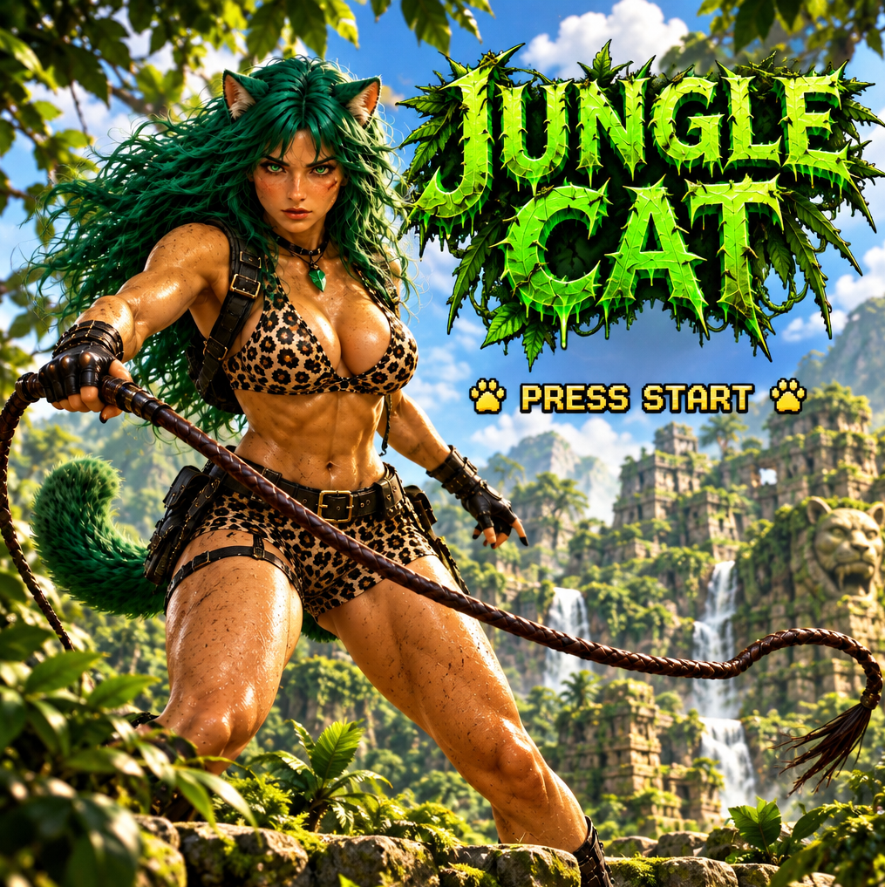
A little adventure is waiting beyond the jungle leaves.
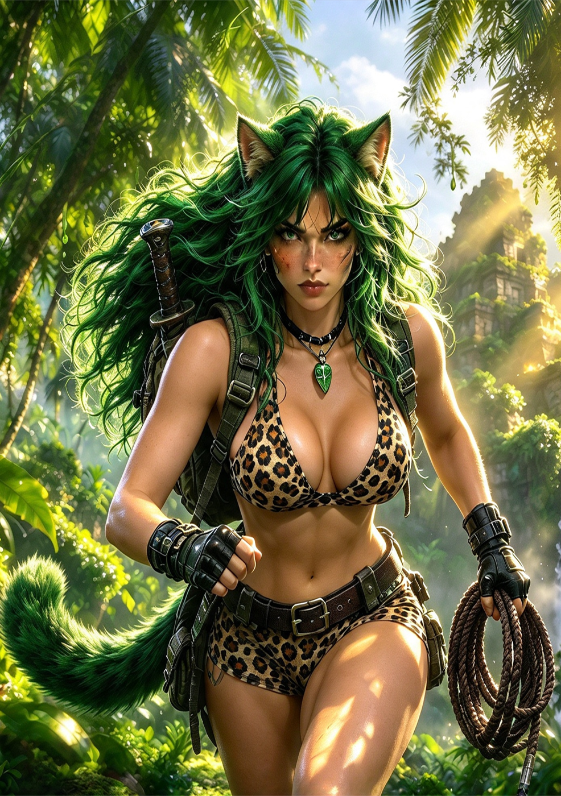
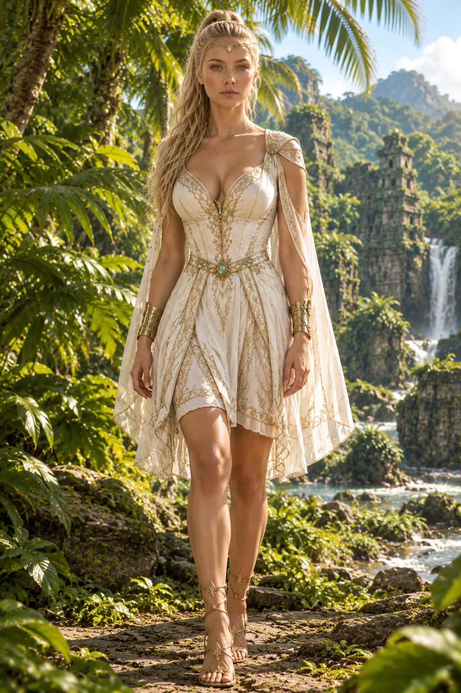
This is an AI-generated game made from scratch. The goal is an Atari Falcon 060 jump ’n’ run with super-smooth animations. This browser version is the high-end one — the ambition is to bring nearly the same graphics to the Atari at 320 × 240.
The project brings together artwork, animation, sound, voice and video tools to create a little adventure in the wild.
Chapter I
Far away, beyond the mountains and endless forests, there was a beautiful kingdom ruled by a wise and beloved queen. For many years, the kingdom lived in peace.
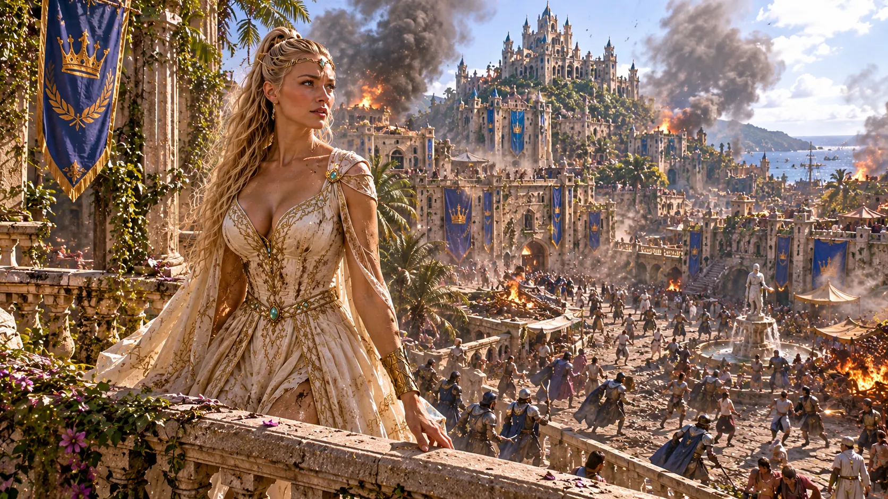
After the queen passed away, chaos swept over the kingdom. Her daughter, the princess, was next in line to become queen. But not everyone wanted to see her on the throne.
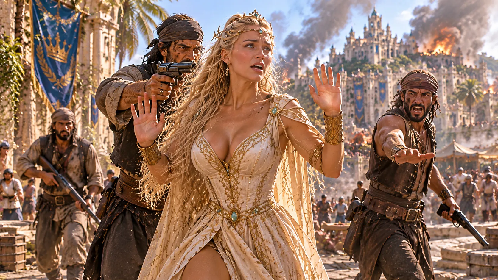
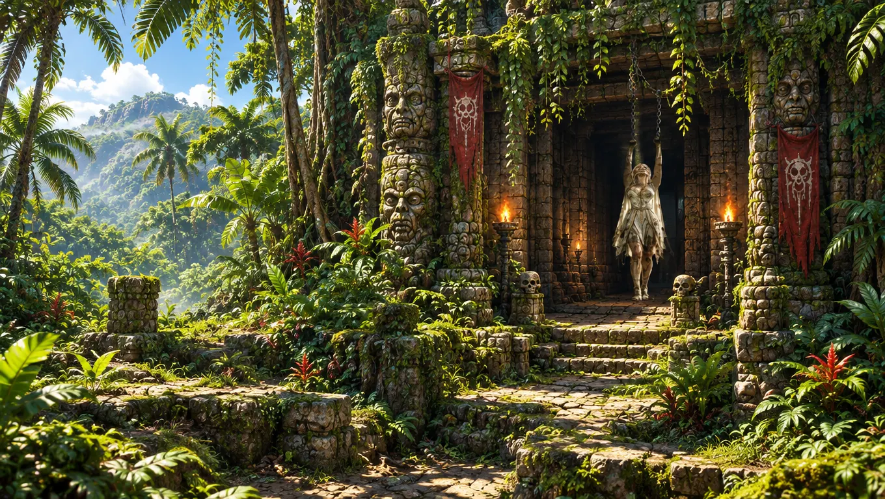
A ruthless military gang had secretly planned to take control of the kingdom. They kidnapped the princess and demanded five billion dollars for her release. Their real plan was much darker: to take her far away into a forgotten jungle nobody dared to enter, abandon her there, and seize the throne.
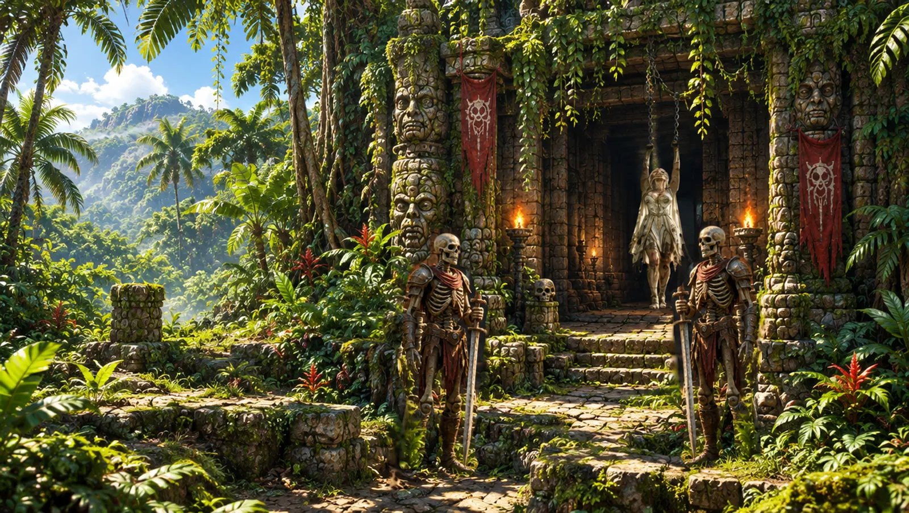
Chapter II
Deep inside the jungle lived a mysterious young woman known as Jungle Cat. With her long green hair, feline ears and fluffy tail, she knew the jungle better than anyone. Brave, clever and independent, she had learned to survive in a world where danger could hide behind every tree.
When she discovered what had happened to the princess, she decided to find her, following the clues the kidnappers had left behind.
Her journey would take her through dense tropical forests, dangerous river crossings, forgotten temples, mysterious caves and ancient ruins. Dinosaurs still roamed this lost world. Jungle Cat had to use all her courage, agility and jungle knowledge to survive.
Chapter III
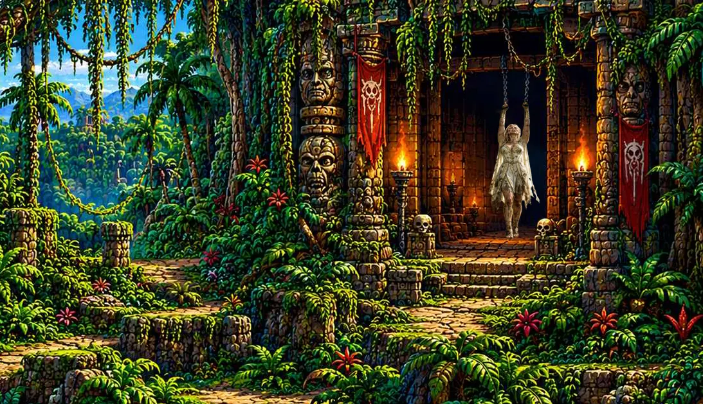
Eventually Jungle Cat discovered where the princess was being held. The gang had made a hidden camp deep in the jungle, inside an old temple ruin.
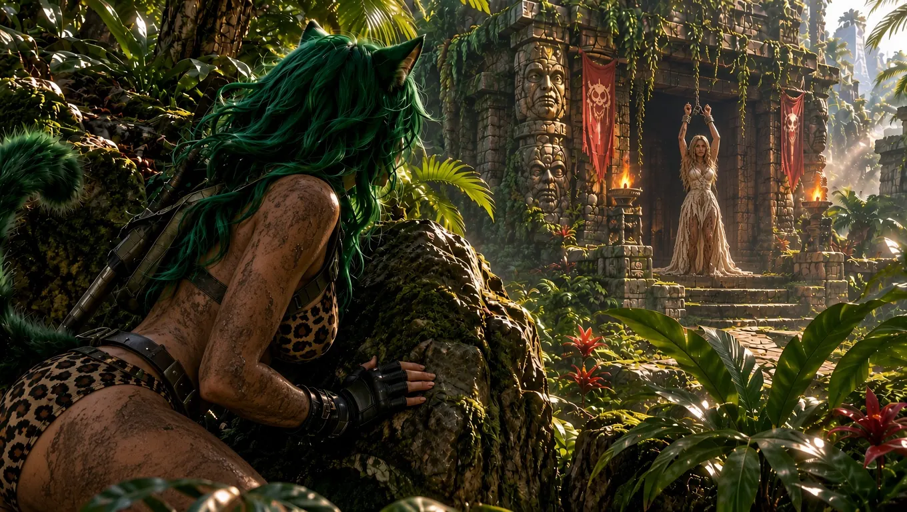
She approached carefully, avoiding the guards and using the jungle itself. After a dangerous confrontation, she reached the princess. Frightened and exhausted, the princess had never completely lost hope. And then, suddenly, there she was. Jungle Cat.
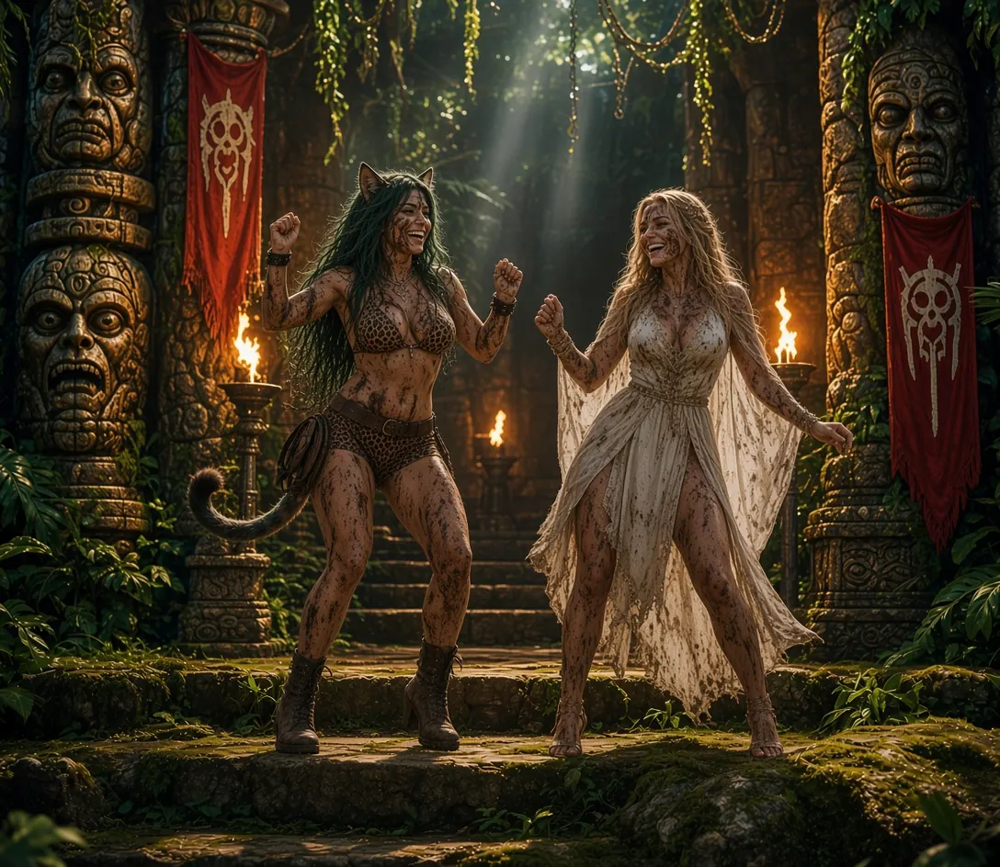
In the end, the gang was defeated. The princess was free. And the kingdom was saved.
Chapter IV
When the princess finally returned home, the entire kingdom celebrated. Soon a magnificent royal ceremony took place. The princess received her crown and became the new queen.
Jungle Cat was there. The queen never forgot who had saved her life and her kingdom. As thanks, she declared Jungle Cat’s territory a protected nature reserve. Nobody would be allowed to destroy its forests or disturb its wildlife. And Jungle Cat would always be welcome at the royal palace.
Chapter V
Although Jungle Cat preferred her wild home to the royal palace, the two became very good friends. The queen sometimes visited, leaving her duties behind for a little while. They explored hidden waterfalls, ancient temples, mysterious rivers and sunny clearings.
Sometimes they simply listened to the forest. The princess had become queen, the kingdom was safe, and the jungle was protected. It seemed their adventures had finally come to a happy ending.
Chapter VI
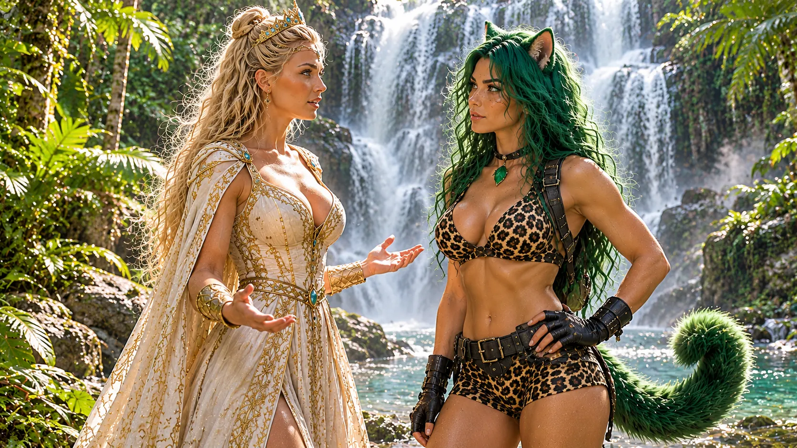
One beautiful morning the queen arrived in the jungle with a very different expression. Strange things had been happening back in the kingdom, and she was worried something dangerous was growing. She had come to ask her old friend for help.
Jungle Cat listened carefully. Then she looked toward the endless green. Perhaps their adventures were not over after all.
The legend continues
Jungle Cat 2 — a new adventure awaits
Behind the adventure
A little independent game project inspired by classic platform adventures, lush jungle worlds and the spirit of the Atari Falcon.
Jungle Cat is planned as a fast, colourful jump ’n’ run adventure. Explore forgotten temples, cross rivers, avoid dangerous creatures and find your way through a mysterious lost world.
Jungle Cat is quick, resourceful and completely at home in the wilderness. Her whip, agility and knowledge of the jungle help her overcome obstacles and protect the princess.
The project is being developed with the Atari Falcon 030/060 in mind, with a modern browser presentation to show the artwork and story in greater detail.
Beyond the kingdom lies a vast jungle filled with waterfalls, ancient stone temples, hidden paths and creatures from a forgotten age. There is always another secret beyond the next bend.
Game configuration reference
A complete reference to the game’s adjustable values.
Every setting of the game, its default value, and what it does.
js/game.js: all settings are in the GAME SETTINGS block at the top of the file, one line each.HERO_WALK_SPEEDDefault: 0.65Step: 0.01Walking / running speed on the ground.
HERO_CROUCH_SPEEDDefault: 0.35Step: 0.01Walking speed while crouching.
HERO_SWIM_SPEEDDefault: 0.55Step: 0.01Swimming speed in the water (sideways)
HERO_AIR_SPEED_FACTORDefault: 1.9Step: 0.1Sideways speed in the air = walk speed x this (the hero flies further in a jump)
HERO_ROPE_SPEEDDefault: 0.75Step: 0.01Speed while hanging on a rope hole.
HERO_CLIMB_SPEEDDefault: 0.7Step: 0.01Speed climbing up / down a vine.
HERO_JUMP_SPEEDDefault: 2.975Step: 0.1Start speed of a jump upwards.
HERO_GRAVITYDefault: 0.095Step: 0.001Falling: speed gained every tick.
HERO_MAX_FALL_SPEEDDefault: 4.5Step: 0.1Falling never gets faster than this.
HERO_CLIMB_JUMP_SPEEDDefault: 2.4Step: 0.1Jump off a vine.
HERO_CLIMB_TOP_HOPDefault: 2Step: 1Little hop when she climbs over the top of a vine.
HERO_ROPE_HOP_UPDefault: 1.6Step: 0.1Hop up at the end of a rope hole.
HERO_ROPE_HOP_SIDEDefault: 0.65Step: 0.01Hop sideways at the end of a rope hole.
HERO_SPIKE_BOUNCEDefault: 2.5Step: 0.1Bounce up after she touched spikes.
HERO_WATER_TICKSDefault: 600Step: 10Ticks in the deep water until she is eaten / drowns (600 = 10 seconds)
HERO_HURT_INVULNDefault: 80Step: 5Ticks she can not be hurt again after a hit.
SWIM_SINKDefault: 0.04Step: 0.001Swimming: she sinks by this every tick.
SWIM_DIVEDefault: 0.1Step: 0.01Swimming: extra downward push while the DOWN key is held.
SWIM_RISEDefault: 0.18Step: 0.01Swimming: upward push while UP / JUMP is held.
SWIM_MAX_UPDefault: 1Step: 1Swimming: fastest way up.
SWIM_MAX_DOWNDefault: 0.8Step: 0.01Swimming: fastest way down.
HOLE_POST_WDefault: 10Step: 1Width (units) of the wooden posts drawn at both ends of a rope hole.
JUMP_SLOWDefault: 0.704Step: 0.01Slow-motion factor for jumping and falling. 1 = the original fast speed; lower = floatier and slower, with the same jump height and distance.
HERO_SLOWDefault: 0.85Step: 0.01Slows down moving along a rope or vine and its animation (1 = full speed).
VINE_GDefault: 0.19Step: 0.01Swing gravity of the swinging vines (was .38, faster).
VINE_LAUNCHDefault: 1.41Step: 0.1Swing gravity (was .38 = faster) and a launch boost so the jump distance stays the same.
RUN_ANIM_KDefault: 1.4Step: 0.1How fast the run animation plays while running on the ground (higher = the legs move faster).
HANG_KDefault: 0.95Step: 0.01Size of the vine-hang animation (1 = as exported)
JAPEXDefault: 20Step: 1Which picture (0-44) is shown at the top of the jump.
JRATEDefault: 1.7Step: 0.1Max pictures per tick (higher = snappier changes).
JLANDDefault: 18Step: 1Launch speed, apex frame (0-based), max frames per tick, ground distance where the landing reach starts.
RESP_SAFEDefault: 1Step: 11 = after a hit she comes back at a safe spot close to where she was hurt; 0 = old behaviour (the far checkpoint).
RESP_BACKDefault: 34Step: 5How many units back from the place where she was hit the safe respawn spot is put.
RESP_MAXDefault: 260Step: 10Farthest distance (units) the respawn spot may be from where she was hit.
RESP_HOLEDefault: 60Step: 5She never respawns closer than this (units) to a water hole.
RESP_ENEMYDefault: 110Step: 10She never respawns closer than this (units) to a living enemy.
RESP_HITDefault: 1Step: 11 = an enemy hit fades the screen out and puts her at the safe respawn spot; 0 = she only loses a heart and stays where she is.
FADE_OUTDefault: 70Step: 5Ticks the screen needs to fade to black before a respawn.
FADE_INDefault: 45Step: 5Ticks the screen needs to fade back in after the respawn.
SWKDefault: 1.12Step: 0.1Size of the swimming picture.
IKDefault: 1.1Step: 0.1Height scale of the hero idle pictures (1 = as drawn).
HID_STEPDefault: 110Step: 10Hero idle: ticks one pose is held (the 6 new pictures play 1-2-3-4-5-6-5-4-3-2-1 ... and fade into each other).
HID_FADEDefault: 0Step: 1Part of every step used to fade into the next picture (0 = hard cut, 1 = always fading).
IWDefault: 1.22Step: 0.1Height / width factor of the idle pose.
DUCK_KDefault: 0.9Step: 0.01Duck pose size.
CROUCH_ANIMDefault: 1Step: 11 = new crouch-down animation, 0 = old single picture.
CD_DNDefault: 24Step: 5Ticks to go down.
CD_UPDefault: 16Step: 1Ticks to stand up.
CD_DZDefault: 0.24Step: 0.01Share of the time spent dissolving into the hold pose.
CLIMB_ONDefault: 1Step: 10 = old pose (run picture), 1 = the new climbing animation (33 pictures)
CLIMB_FPTDefault: 0.5Step: 0.01Pictures per game tick while she climbs (60 ticks/s -> 30 pictures/s). Up = forward,.
CLIMB_KDefault: 0.165Step: 0.01Game units per picture pixel (size). CLIMB_AX / CLIMB_AY = point of the picture that sits on.
CLIMB_AXDefault: 147Step: 10Sideways anchor point (picture pixels) of the climbing animation: the point of the picture placed on the vine or ladder.
CLIMB_AYDefault: 315Step: 10Vertical anchor point (picture pixels) of the climbing animation.
CLIMB_DYDefault: 2Step: 1Moves the climbing animation up or down (units).
ROPE_ONDefault: 1Step: 10 = old pose (run picture + drawn arms), 1 = the hand-over-hand animation.
ROPE_FPTDefault: 0.7Step: 0.01Speed of the rope-hang animation (pictures per tick).
ROPE_NDefault: 37Step: 5Number of pictures of the rope-hang animation. Only change this if you replace the pictures.
ROPE_KDefault: 0.16Step: 0.01Game units per picture pixel (size of the animation). ROPE_AX / ROPE_AY = the point of.
ROPE_AXDefault: 120Step: 10Sideways anchor point (picture pixels) of the rope-hang animation: the point that sits on the rope.
ROPE_AYDefault: 31Step: 5Vertical anchor point (picture pixels) of the rope-hang animation.
ROPE_TILTDefault: 0.5Step: 0.01How strongly the hanging pose tilts with the slope of the rope.
VL_ONDefault: 1Step: 10 = off (old behaviour).
VL_TPFDefault: 1.7Step: 0.1Game ticks per leap picture (19 pictures in about 32 ticks, the last one is held).
VL_HOLDDefault: 10Step: 1Extra ticks she stays crouched after landing from a jump.
VL_AYDefault: 25Step: 5Height (units) of the body centre above her feet in the jump pictures.
WHIP_COOLDOWNDefault: 26Step: 5Ticks before the next whip hit.
MACE_COOLDOWNDefault: 18Step: 1Ticks before the next mace hit.
KNIFE_COOLDOWNDefault: 20Step: 1Ticks before the next knife throw.
KNIFE_SPEEDDefault: 5Step: 1Flying speed of a thrown knife (the hero's "bullet")
KNIFE_LIFEDefault: 80Step: 5Ticks a knife flies before it disappears.
WH_TDefault: 21Step: 5Ticks of one whip swing (smaller = faster).
WH_A0Default: -1.55Step: 0.1Start angle.
WH_A1Default: 0.5Step: 0.01End angle (guide arc for jumps / hanging).
WH_LAGDefault: 0.38Step: 0.01How much the tip trails behind (the "crack").
WA_LAGDefault: 2.5Step: 0.1Same for the standing whip-attack pictures.
WP_NDefault: 22Step: 5Whip physics: number of points of the whip rope (more = smoother and heavier).
WP_STDefault: 1.656Step: 0.1Whip physics: length of one link of the whip (units). Whip length = WP_N x WP_ST.
WP_HDDefault: 4Step: 1Whip physics: number of points at the handle that are held rigid by the hand.
WP_GDefault: 0.085Step: 0.001Whip physics: gravity pulling the whip down.
WP_DAMPDefault: 0.985Step: 0.01Whip physics: air drag. 1 = none, lower = the whip slows down quickly.
WP_BENDDefault: 0.2Step: 0.01Whip physics: stiffness (higher = a straighter, stiffer whip).
WP_DRVDefault: 0.26Step: 0.01Whip physics: how strongly the whip is pulled along the animated swing arc (higher = follows the animation more exactly).
WP_FADEDefault: 30Step: 5Whip physics: ticks the whip stays visible after the swing is over.
WP_W1Default: 1.3Step: 0.1Thickness of the whip at the handle (units).
WP_W2Default: 0.55Step: 0.01Thickness of the whip at the tip (units).
WP_HXDefault: 7Step: 1Sideways position of the hand that holds the whip, measured from her body centre (units).
WP_HYDefault: -24Step: 5Height of the hand that holds the whip, measured from her feet (negative = above the feet).
SPEED_SNAKEDefault: 0.25Step: 0.01Walking speed of snakes (units per tick).
SPEED_BATDefault: 0.35Step: 0.01Flying.
SPEED_CROCODILEDefault: 0.15Step: 0.01Swimming speed of crocodiles (units per tick).
SPEED_RAPTORDefault: 0.45Step: 0.01Running speed of raptors (units per tick).
SPEED_LIZARDMANDefault: 0.18Step: 0.01Walking speed of lizardmen (units per tick).
SPEED_SPIDERDefault: 0.3Step: 0.01Walking speed of spiders (units per tick).
SPEED_DRAGONFLYDefault: 0.5Step: 0.01Flying.
SPEED_BEASTDefault: 0.14Step: 0.01Walking speed of beasts (units per tick).
SPEED_SKELETONDefault: 0.22Step: 0.01Walking speed of skeletons (units per tick).
BAT_BOB_PERIODDefault: 16Step: 1The bat flies up and down: bigger = slower.
BAT_BOB_HEIGHTDefault: 8Step: 1... and this high (units)
DRAGONFLY_BOB_PERIODDefault: 9Step: 1Speed of the up-and-down movement of dragonflies (bigger = slower).
DRAGONFLY_BOB_HEIGHTDefault: 12Step: 1How high dragonflies move up and down (units).
ENEMY_RESPAWN_TICKSDefault: 18000Step: 50A killed enemy comes back after this many ticks (18000 = 5 minutes) - but only when you are more than 220 units away.
NEVER_RESPAWNDefault: 1000000000000Step: 50The gorilla and the woman boss use this: they never come back.
ATK_ONDefault: 1Step: 11 = enemies play their attack animation, 0 = off.
ATK_TDefault: 44Step: 5Length of the attack animation in ticks.
ATK_CDDefault: 150Step: 10Ticks between two attack animations.
ATK_RYDefault: 34Step: 5Height tolerance for starting the attack.
SK_HITDefault: 1Step: 11 = the long sword really hurts (in the last 2 attack pictures), 0 = it is only a picture.
SK_REACHDefault: 44Step: 5Reach of the skeleton sword (units): how far in front of him it can hurt.
SPK_ONDefault: 1Step: 11 = spikes in the water holes hurt her; 0 = they are harmless.
SPK_KDefault: 0.2Step: 0.01Size of the spike pictures (units per picture pixel; one tile is 32 units wide).
SPK_HITDefault: 10Step: 1Height (units) of the dangerous part of the spikes, measured from the bottom of the level.
ARR_VOLDefault: 1Step: 1Volume of the arrow sound of the enemy 10 archers (1 = normal).
ARC_ONDefault: 1Step: 11 = enemy 10 archers are active; 0 = they do nothing.
ARC_HPDefault: 4Step: 1Hits to kill her (machete, whip or throwing knives each count 1)
ARC_IDLE_LOOPSDefault: 3Step: 1She plays her idle animation this many times, then does ONE attack (shoots one arrow), then idle again ... (replaces the old fixed time between arrows)
ARC_IDLE_TPFDefault: 4Step: 1Ticks per idle picture (12 pictures: 4 -> one idle loop = 48 ticks = 0.8 s, 3 loops = 2.4 s)
ARC_FADEDefault: 3Step: 1Idle -> attack: the first attack pictures fade in over this many pictures (0 = hard cut)
ARC_TPFDefault: 3.6Step: 0.1Ticks per attack picture (25 pictures). Draw+shoot takes 25*3.6 = 90 ticks.
ARC_RELDefault: 22Step: 5Picture at which the arrow leaves the bow (the game spawns the real arrow there)
ARC_RECOVDefault: 16Step: 1Ticks the archer needs after shooting before she goes back to idle.
ARC_RANGEDefault: 175Step: 10She starts shooting when you are closer than this many units.
ARC_SPEEDDefault: 1.5Step: 0.1Arrow speed (units/tick). ARC_AIM = .3 how steeply she may aim up/down.
ARC_AIMDefault: 0.3Step: 0.01How steeply the enemy 10 archer may aim up or down (0.3 = about 17 degrees).
ARC_LENDefault: 21Step: 5Drawn arrow length. ARC_K = .1548, ARC_AX/ARC_AY = size / feet anchor of her pictures.
ARC_KDefault: 0.1703Step: 0.01Size of the enemy 10 archer pictures (units per picture pixel).
ARC_AXDefault: 156Step: 10Feet anchor of her pictures: sideways point (picture pixels).
ARC_AYDefault: 316Step: 10Feet anchor of her pictures: vertical point (picture pixels).
ARC_SXDefault: 13.5Step: 1Where the arrow leaves the bow: distance in front of her body centre (units).
ARC_SYDefault: 45.4Step: 1Where the arrow leaves the bow: height above her feet (units).
ARC2_ONDefault: 1Step: 11 = she shoots, 0 = she only stands.
ARC2_HPDefault: 2Step: 1Hits to kill her.
ARC2_PERIODDefault: 300Step: 10Ticks between two shots (5 s).
ARC2_RANGEDefault: 175Step: 10She starts shooting closer than this.
ARC2_SPEEDDefault: 1.6Step: 0.1Arrow speed.
ARC2_AIMDefault: 0.8Step: 0.01How steeply she may aim up/down (was .3 = arrows went straight past you when you stood higher or lower).
ARC2_LENDefault: 24Step: 5Arrow length (units).
ARC2_THICKDefault: 1.7Step: 0.1Arrow thickness (1 = as drawn).
ARC2_KDefault: 0.129Step: 0.01Size of the picture (bigger = taller girl).
ARC2_AXDefault: 102Step: 10Feet anchor of the enemy 30 idle pictures: sideways point (picture pixels).
ARC2_AYDefault: 374Step: 10Feet anchor of the enemy 30 idle pictures: vertical point (picture pixels).
ARC2_SXDefault: 9Step: 1Where her arrow leaves the bow: distance in front of her body centre (units).
ARC2_SYDefault: 43Step: 5Where her arrow leaves the bow: height above her feet (units).
ARC2_BXDefault: 138Step: 10Feet anchor of the enemy 30 attack pictures: sideways point (picture pixels).
ARC2_BYDefault: 440Step: 10Feet anchor of the enemy 30 attack pictures: vertical point (picture pixels).
ARC2_RECDefault: 20Step: 1Ticks she needs after shooting before she goes back to idle.
ARC2_SCOREDefault: 250Step: 10Points for a kill.
ARC2_ITDefault: 40Step: 5Ticks per idle picture of the enemy 30 archer (bigger = slower idle animation).
GOR_ONDefault: 1Step: 11 = the gorilla is active; 0 = he does nothing.
GOR_HPDefault: 6Step: 1Hits to kill.
GOR_REACHDefault: 137.5Step: 10Longest jump (units; was 125, now 10% wider)
GOR_JMINDefault: 3Step: 1Shortest jump of the gorilla in metres (1 metre = 3.2 units).
GOR_JMAXDefault: 7Step: 1A visible gorilla hops 3 to 7 metres per jump (1 m = GOR_M units)
GOR_CATCHDefault: 5Step: 1OFF screen he runs this many times faster and jumps GOR_REACH far, so he always catches up with you.
GOR_STUCKDefault: 90Step: 5Off screen and no way forward (hole, wall) for this many ticks: he appears again on the ground behind you.
GOR_ARCDefault: 44.9Step: 1Jump height (was 34, then 37.4, now +20% more)
GOR_UPDefault: 26Step: 5Highest step he can jump up.
GOR_DROPDefault: 90Step: 5Deepest drop he jumps down.
GOR_WATERDefault: 205Step: 10Ground lower than this is water.
GOR_TPFDefault: 6Step: 1Ticks per attack picture (jump speed; was 2.4, then 3, now half the speed again)
GOR_F0Default: 8Step: 1Number of the attack picture where the gorilla jump animation starts.
GOR_FTDefault: 17Step: 1Number of the attack picture where the gorilla leaves the ground.
GOR_FLDefault: 28Step: 5Number of the attack picture where the gorilla lands.
GOR_RECDefault: 68Step: 5Ticks the gorilla rests after landing before the next jump.
GOR_CDDefault: 68Step: 5Rest between jumps (ticks, was 34)
GOR_STOMPDefault: 26Step: 5Landing damage radius.
GOR_KDefault: 0.192Step: 0.01Size (units per picture pixel)
GOR_AAXDefault: 170Step: 10Anchor of the gorilla attack pictures: sideways point (picture pixels).
GOR_AAYDefault: 287.5Step: 10Anchor of the gorilla attack pictures: vertical point (picture pixels).
GOR_IAXDefault: 101.55Step: 10Anchor of the gorilla idle pictures: sideways point (picture pixels).
GOR_IAYDefault: 338.5Step: 10Anchor of the gorilla idle pictures: vertical point (picture pixels).
WBS_VOLDefault: 1Step: 1Volume of the woman boss shot sound (1 = normal).
BOSS_FIRE_TICKSDefault: 120Step: 10Ticks between two shots (120 = one shot every 2 seconds). Higher = easier.
BOSS_BULLET_SPEEDDefault: 1.3Step: 0.1Speed of the bullets (was 2.3). Lower = easier.
WB_ONDefault: 1Step: 11 = the woman boss is active; 0 = she does nothing.
WB_HPDefault: 8Step: 1End boss hp:12 (+ hp0:12, in bossInit)
WB_PERIODDefault: 120Step: 10Ticks between shots (120 = every 2 seconds)
WB_TPFDefault: 5Step: 1Ticks per attack picture (draw + aim + shoot = 50 ticks)
WB_RANGEDefault: 230Step: 10She starts shooting when you are closer than this.
WB_SPEEDDefault: 2.6Step: 0.1Bullet speed.
WB_AIMDefault: 0.18Step: 0.01How steeply the woman boss may aim up or down.
WB_RELDefault: 5Step: 1Position in the attack sequence where the shot leaves the gun.
WB_ITDefault: 7Step: 1Ticks per idle picture of the woman boss (bigger = slower idle animation).
WB_KDefault: 0.1735Step: 0.01Size WB_MX / WB_MY = muzzle position (35 / 40.6 units from her feet)
WB_AXDefault: 259Step: 10Feet anchor of the woman boss pictures: sideways point (picture pixels).
WB_AYDefault: 308Step: 10Feet anchor of the woman boss pictures: vertical point (picture pixels).
WB_MXDefault: 35Step: 5Muzzle position of her gun: distance in front of her body centre (units).
WB_MYDefault: 40.6Step: 1Muzzle position of her gun: height above her feet (units).
CHAT_VOLDefault: 0.8Step: 0.01Volume of the chimp attack sound (1 = normal).
CHM_ONDefault: 1Step: 11 = chimps are active; 0 = they do nothing.
CHM_HPDefault: 2Step: 1Hits to kill him.
CHM_PERIODDefault: 300Step: 10Ticks from one throw to the next (5 s)
CHM_RANGEDefault: 150Step: 10He throws when you are closer than this (units)
CHM_TPFDefault: 3.4Step: 0.1Ticks per throw picture.
CHM_ITPFDefault: 2.4Step: 0.1Ticks per idle picture.
CHM_RELDefault: 9Step: 1Throw picture where the coconut leaves his hand.
CHM_FLYDefault: 1.7Step: 0.1Coconut speed (units per tick), CHM_GRAV = .05 gravity.
CHM_GRAVDefault: 0.05Step: 0.001Gravity pulling on the coconuts the chimp throws.
CHM_KDefault: 0.19Step: 0.01Picture size (units per picture pixel)
CHM_BODYDefault: 11.5Step: 1How far his body hangs beside the vine.
CHM_LIFTDefault: 26Step: 5Height of his hit box above the ground.
CHM_TOPYDefault: 16.3Step: 1Moves the chimp pictures up or down relative to his body (units).
CHM_ROPEDefault: 130Step: 10Rope length above him.
CHM_WDefault: 226Step: 10Width of the chimp pictures (pixels). Only change this if you replace the pictures.
CHM_HDefault: 294Step: 10Height of the chimp pictures (pixels). Only change this if you replace the pictures.
DANCE_SCALEDefault: 1.2Step: 0.1Size of the victory dance (1 = same height as the idle pose)
PIL_HDefault: 70Step: 5Height (units) of the pillars at the temple of the princess.
DANCE_ONDefault: 1Step: 11 = the dance plays after the boss, 0 = no dance.
DANCE_NDefault: 90Step: 5Number of dance pictures. Change only if you add/remove pictures.
DANCE_TPFDefault: 2.5Step: 0.1Ticks per picture (2.5 = the video's 24 pictures per second).
DANCE_LOOPSDefault: 3Step: 1How many times the dance is played.
PR_ONDefault: 1Step: 11 = the princess takes part in the victory dance; 0 = she does not.
PR_NDefault: 82Step: 5Number of pictures of the princess dance. Only change this if you replace the pictures.
PR_KDefault: 0.1985Step: 0.01Size (units per picture pixel; the hero's dance is about .2)
PR_XDefault: 18041Step: 50Sideways position (units) where the princess stands.
PR_FYDefault: 129.5Step: 10Where she stands (centre x / feet y)
PR_DXDefault: 42Step: 5Distance between the two dancers.
CAP_ONDefault: 1Step: 11 = the scene behind the end boss is shown; 0 = switched off.
CAP_XDefault: 17862Step: 50Sideways position (units) of the scene behind the end boss.
CAP_FYDefault: 176Step: 10Height (units) of the feet of the figures in the scene behind the end boss.
CAP_KDefault: 0.165Step: 0.01Size of the scene behind the end boss (units per picture pixel).
CAP_TPFDefault: 6Step: 1Ticks per picture of the scene behind the end boss (6 = 10 pictures per second).
CAP_ALPHADefault: 1Step: 1Transparency of the scene behind the end boss (1 = solid, 0 = invisible).
CAP_VOLDefault: 1Step: 1Volume of the scene's sound (audio/captive_scene.mp3), played once at the start of every loop of the animation. 0 = silent.
PRH_ONDefault: 1Step: 11 = the princess waits in the temple door before the dance; 0 = she is not shown.
PRH_XDefault: 18028.6Step: 1000Sideways position (units) of the princess in the temple door.
PRH_FYDefault: 131.9Step: 10Height (units) of her feet in the temple door.
PRH_KDefault: 0.13196Step: 0.01Size of the princess in the temple door (units per picture pixel).
RED_GEMS_ONDefault: 1Step: 11 = the red danger gems are placed in the level; 0 = none.
RED_GEM_DAMAGEDefault: 1Step: 1Hearts lost when she touches a red gem.
RED_GEM_HITDefault: 6Step: 1Half size of the dangerous part (units) around the gem centre.
CHEAT_KEYSDefault: 1Step: 11 = test keys work while playing (5 = in front of an enemy 10 archer, 8 = enemy 30 archer, 7 = end boss, 6 = chimp, 0 = skeleton bridge, 9 = skip the dance); 0 = switched off for the final release.
CRAWL_NDefault: 45Step: 5Number of pictures of the crawl animation. Only change this if you replace the pictures.
CRAWL_KDefault: 4.8Step: 0.1Crawl animation speed: pictures per step of walking. Bigger = faster legs.
BR_ANCHDefault: 0.76Step: 0.01Share of the bridge picture above the walking line (bigger = bridge sits higher,.
CL_ONDefault: 1Step: 11 = clouds drift across the sky; 0 = no clouds.
CL_ALPHADefault: 0.2Step: 0.01Transparency of the clouds (1 = solid, 0 = invisible).
CL_SPANDefault: 420Step: 10Width (units) of the sky strip the clouds drift across before they start again.
CL_DRIFTDefault: 0.03Step: 0.001Cloud drift speed.
CL_YDefault: 34Step: 5Height above the highest palm crown of the level (bigger = higher in the sky) (240 settings)
240 settings · Jungle Cat
Gallery
Artwork from the adventure, in the order the story tells it. Select any picture to see it larger.